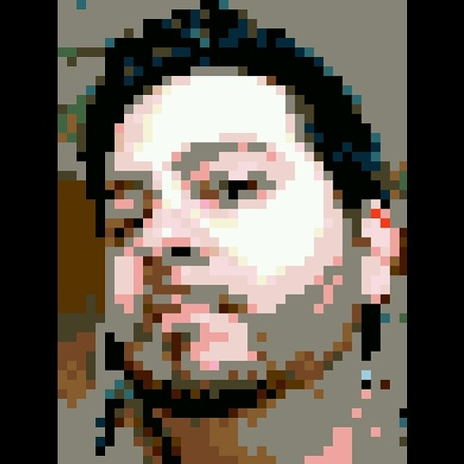

 Bio
Born and raised in Toledo, OH, Gabriel Alonzo attended the Ohio State University on an academic scholarship, where he began working in IT in the computer labs. Shortly after graduating with a bachelor’s degree in CIS (Computer and Information Science), he started a career in IT, all the while still using his coding skills to create websites on the side. He continues to use both skillsets in his current position of Senior Developer at Kinetic Channel Marketing.